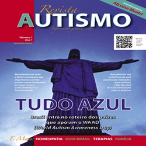

Saiba mais sobre o autismo
Oque é o autismo?
O autismo faz parte de um grupo de síndromes que afeta o desenvolvimento e a capacidade de socialização do indivíduo com outras pessoas, familiares e amigos. Esse grupo de síndromes é chamado de Transtorno Global de Desenvolvimento, TGD, e a doença do autismo pode causar problemas no desenvolvimento do crescimento e da fala, quando forem detectados ainda crianças. Em alguns casos é possível identificar a doença antes dos dois anos de idade e com isso já iniciar um tratamento, que permita ao paciente levar a vida normalmente, dentro do possível e aceitando as suas limitações. A doença não apresenta cura, mas estudos realizados nos Estados Unidos chegaram a resultados próximos, mas ainda não existem medidas de tratamento ou medicamentos que possam garantir a cura da doença. É muito importante e necessário para a eficácia do tratamento, que tanto o paciente quanto os familiares mais próximos aceitem a doença e não deixe que esse problema afete de forma devastadora a vida do paciente.

Causas do Autismo
As causas do autismo ainda são desconhecidas, mas a pesquisa na área é cada vez mais intensa. O que se dialoga é que, o mais provável, é a existência de uma combinação de fatores genéticos e agentes externos que leva ao autismo. Eles desempenham um papel chave nas causas deste transtorno. A Associação Médica Americana afirma que as chances de uma criança desenvolver autismo por causa da herança genética é de 50%, sendo que a outra metade dos casos pode corresponder a fatores exógenos, como o ambiente de criação. De qualquer maneira, muitos genes parecem estar envolvidos nas causas do autismo. Alguns tornam as crianças mais suscetíveis ao transtorno, outros afetam o desenvolvimento do cérebro e a comunicação entre os neurônios. Quanto aos fatores externos que possam contribuir para o surgimento do transtorno estão a poluição do ar, complicações durante a gravidez, infecções causadas por vírus, alterações no trato digestório, contaminação por mercúrio e sensibilidade a vacinas.
Curiosidade